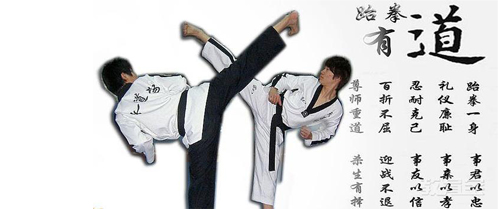

浏览（107） 发布时间：2015-01-12 15:11
深圳正一道场跆拳道教育中心（以下简称“正一道场”），主要从事跆拳道培训、空手道、合气道、咏春、剑道培训等经营及发展相关业务。各个分道馆分布于深圳市各区，总馆位于美丽的深圳湾体育中心129号。正一道场拥有一流的师资力量，师范指导者（教练）均持有“世界跆拳道联盟”（The World Teakwondo Federation）的黑带段位。正一道场2015年1月13日晚8点正式上线融资，此项目计划融资65万元，其中项目方自出资13万剩余的由创业网投资人众筹完成单笔投资额为2万元。
跆拳道是现代奥运会正式比赛项目之一，是一种主要使用手及脚进行格斗或对抗的运动。跆拳道起源于朝鲜半岛，早期是由朝鲜三国时代的跆跟、花郎道演化而来的，韩国民间较普遍流行的一项技击术。“跆拳道”一词，是1955年由韩国的崔泓熙将军创造，被韩国视为国技。 跆（TAE），意为以脚踢； 拳、（KWON），以拳头打击； 道（DO），则是代表道行、礼仪修练的艺术。经过实践，让青少年练习跆拳道好处很多。
健体：跆拳道的健体作用不言而喻。其动作中的各种踢腿、手臂的上格、下截、拉伸等动作，可使幼儿的肌肉和力量得到增强，肌腱、韧带、肌肉的弹性得以提高，从而增强幼儿的体力和柔韧性。
启智：跆拳道可给大脑许多良好刺激。练习过程不单是骨骼肌肉的收缩，而是空间感知、经验、类型识别等右脑功能的综合发挥，因此非常有利于发展幼儿的空间转换、形体感知等右脑功能，提高了形象思维和创造力。
育心：跆拳道需要通过做变换方向的动作来明确方位，从而发展了幼儿的空间知觉；此外，孩子们还要主动想办法克服困难，这锻炼了意志，培养了勇敢精神，学会了对人、事、物的正确态度。
跆拳道是经过东亚文化发展的一项韩国武术，以“始于礼，终于礼”的武道精神为基础。其脚法占70%。跆拳道的套路共有24套；另外还有兵器、擒拿、摔锁、对拆自卫术及10余种基本功夫等。跆拳道于1988年奥运会时为示范项目；于1992年的巴塞罗那奥运会开始为试验比赛项目；到2000年的悉尼奥运会成为正式比赛项目。
深圳正一道场，在深圳设有8家分店。其本着对孩子认真负责的态度，报名人数只增不减。正一道场，在深圳股权众筹平台将开始上线融资。如果您对正一道场感兴趣，请您继续关注创业网深圳站！